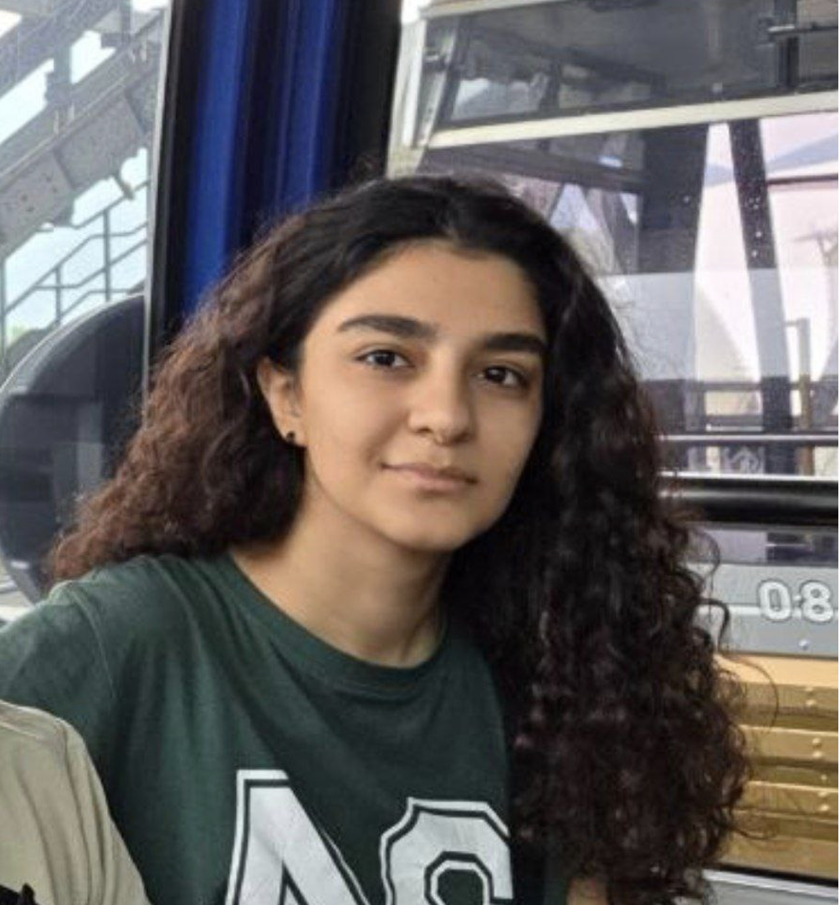

ICLR 2026
DAK-UCB: Diversity-Aware Prompt Routing for LLMs and Generative Models
International Conference on Learning Representations
University of Toronto · Toronto, Canada
PhD student in Mechanical and Industrial Engineering
I study machine learning and sequential decision-making, with interests in multi-armed bandits, online learning, reinforcement learning, and optimization.
I am a PhD student at the University of Toronto, supervised by Prof. Peyman Mohajerin Esfahani. I received my BSc in Computer Engineering from Sharif University of Technology in July 2026.
View my CV
ICLR 2026
International Conference on Learning Representations
My research experience spans bandit algorithms, recommender systems, diffusion models, and optimal transport.
Research Intern · Maastricht, Netherlands
Studied optimal transport using inverse optimization, supervised by Prof. Angelos Georghiou and Prof. Peyman Mohajerin Esfahani.
Bachelor’s thesis · Sharif University of Technology
Supervised by Dr. Amir Najafi.
Undergraduate Research Collaborator · Remote
Supervised by Prof. Vahideh Manshadi (Yale) and Prof. Negin Golrezaei (MIT).
Undergraduate Researcher · The Chinese University of Hong Kong
Supervised by Prof. Farzan Farnia.
Research Assistant · DML Lab
Supervised by Prof. Hamid R. Rabiee.
Machine Learning Intern · Tehran, Iran
Applied data analysis and implemented deep learning architectures for practical tasks.
Head Teaching Assistant · MIE370: Introduction to Machine Learning
I coordinate the teaching assistant team and lead tutorial sessions.
Teaching Assistant
Probability and Statistics (Project Head Teaching Assistant), Numerical Computation, Artificial Intelligence, Machine Learning, Linear Algebra, Fundamentals of Programming, Object-Oriented Programming, and Digital Logic Design.
I enjoy swimming, learning Dutch, chess, and playing guitar. I speak Persian natively, English at C1 level (IELTS Academic: 8.0), and Dutch at A2 level.